Mac
지금 무료- macOS 14 이상 · Apple Silicon & Intel
- Apple 공증을 받아 바로 열려요 · 자동 업데이트
- 코드는 GitHub 에서 누구나 볼 수 있어요 (소스 공개 · 비영리 라이선스)
Mac용 무료 다운로드
최신 버전 1.0.7 · 지난 버전
Daily paper planner
10분 단위 종이 플래너를 그대로 옮긴 플래너예요. 형광펜으로 하루를 칠하고, 펜으로 ○△× 체크하고, 다 쓰면 스프링 노트처럼 한 장 넘겨요. Mac · Windows 에서 지금 무료로 쓸 수 있고, iPhone · iPad · Android 앱도 곧 나와요.
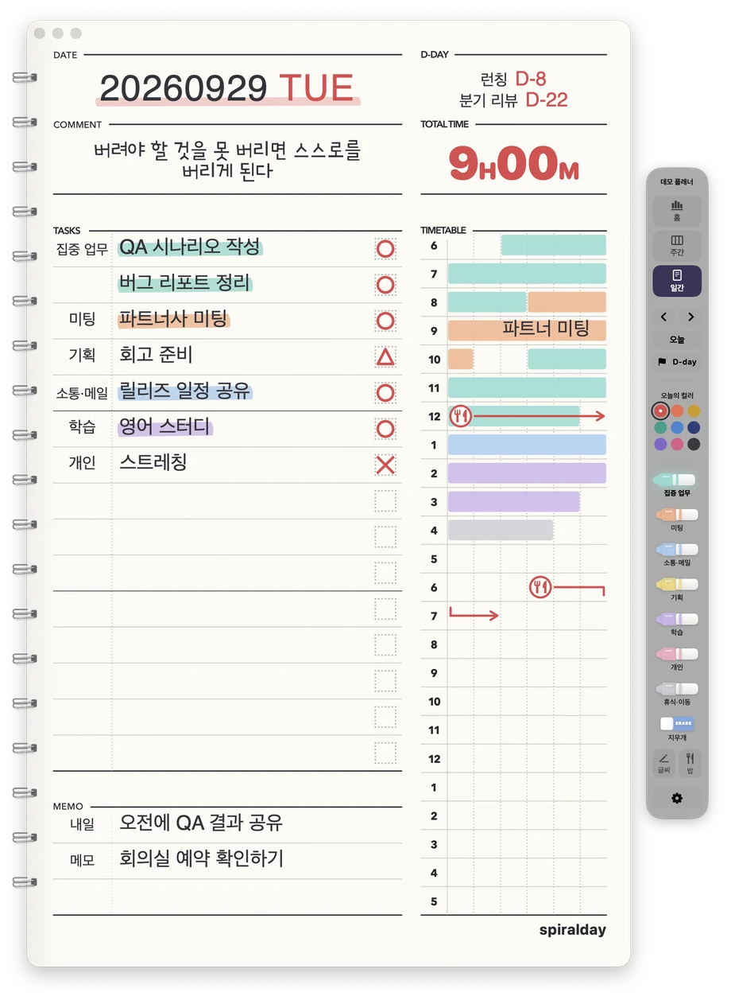
iPhone · iPad 앱은 App Store 에 곧 나와요.Android 앱은 Google Play 에 곧 나와요.
지금은 Mac · Windows 에서 먼저 써 보세요. 나오는 날 Threads 에서 가장 먼저 알려 드릴게요.
Mac · Windows(베타) 용은 컴퓨터에서 받아요 →
지금 무료Mac · Windows (베타) 곧 나와요iPhone · iPad · Android
Linux · ChromeOS 용 앱은 아직 없어요. 필요하면 Threads DM (새 창) 으로 알려 주세요.
요청 · 버그는 Threads DM (새 창) 이나 메일로 보내 주세요.
Platforms
Mac · Windows (베타) 는 지금 바로 무료로 받을 수 있어요. iPhone · iPad · Android 앱은 준비하고 있어요.
최신 버전 1.0.7 · 지난 버전
App Store 에 곧 나와요
Google Play 에 곧 나와요
지금 받을 수 있는 앱 아래 기능은 Mac · Windows 앱 기준이에요. 폰 · 태블릿 앱은 미리 보기에서 볼 수 있어요.
Daily
DATE · D-DAY · COMMENT · TOTAL TIME · TASKS 15줄 · MEMO · 06시부터 다음 날 05시까지의 10분 타임테이블. 종이 플래너에서 익숙한 칸들이 하루 한 장에 다 들어 있어요.
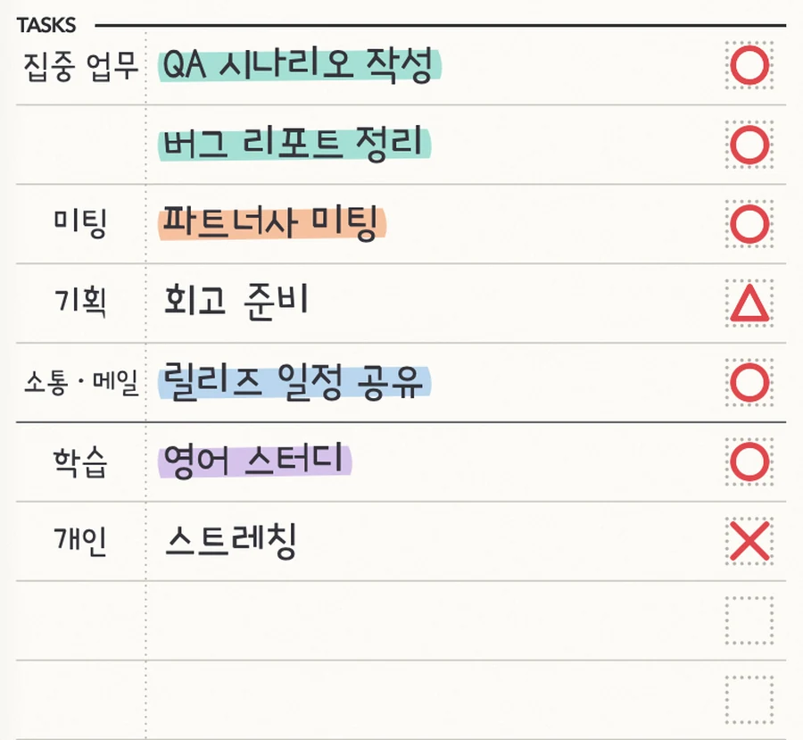
Page turn
종이 모서리를 잡고 끌면 손가락을 따라 말려 올라가고, 놓으면 스프링 쪽으로 넘어가요. 트랙패드 두 손가락 스와이프, ← → 키도 돼요. 종이 뒷면에 앞면 잉크가 살짝 비치는 것까지 그렸어요.
Mac 에서는 스프링 링이 창 밖으로 튀어나와 있어요 — 정말 노트처럼.
Timetable
형광펜을 고르고 10분 칸을 드래그하면 끝. 칠한 시간이 TOTAL TIME 과 형광펜별 시간으로 바로 계산돼요. 타임테이블 위에 손글씨 메모를 쓰고, 🍴 밥시간은 화살표로 이어요.
형광펜 이름·색·순서는 마음대로 바꿀 수 있고, 최대 12개까지 만들 수 있어요.
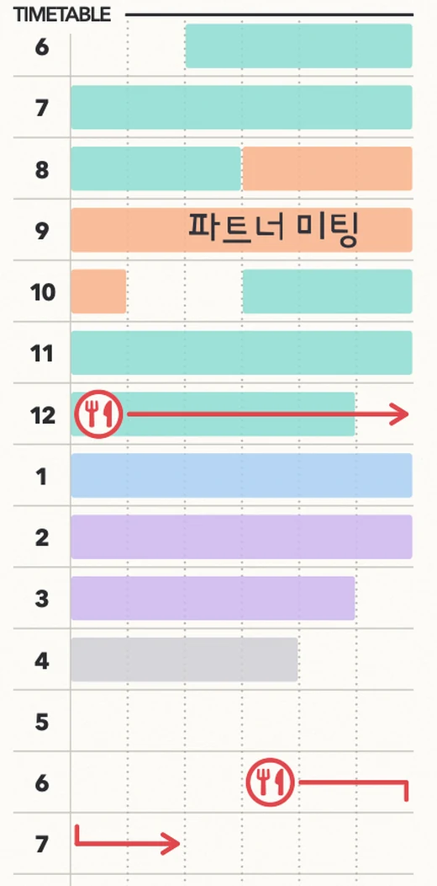
Weekly
MY GOAL 과 주간 회고, 월–일 7칸에 할 일 10줄과 타임테이블. 주간으로 바꾸면 종이가 가로로 놓이고, 스프링은 위로 올라가요.
Home
이번 주·이번 달 시간, 하루 평균, 연속 기록, 할 일 완료율, 최근 12주, 형광펜별 시간, 가장 자주 칠한 시간대와 요일, 최근 35일 달력까지. 날짜를 누르면 그날로 바로 가요.
Planners
권마다 이름, 시작일, 종료일, 표지 색을 정해요. 시작일보다 앞으로는 넘어가지 않고, 종료일을 정하면 그날에서 멈춰요. 업무용 한 권, 공부용 한 권 — 기록과 형광펜이 권마다 따로 저장돼요.
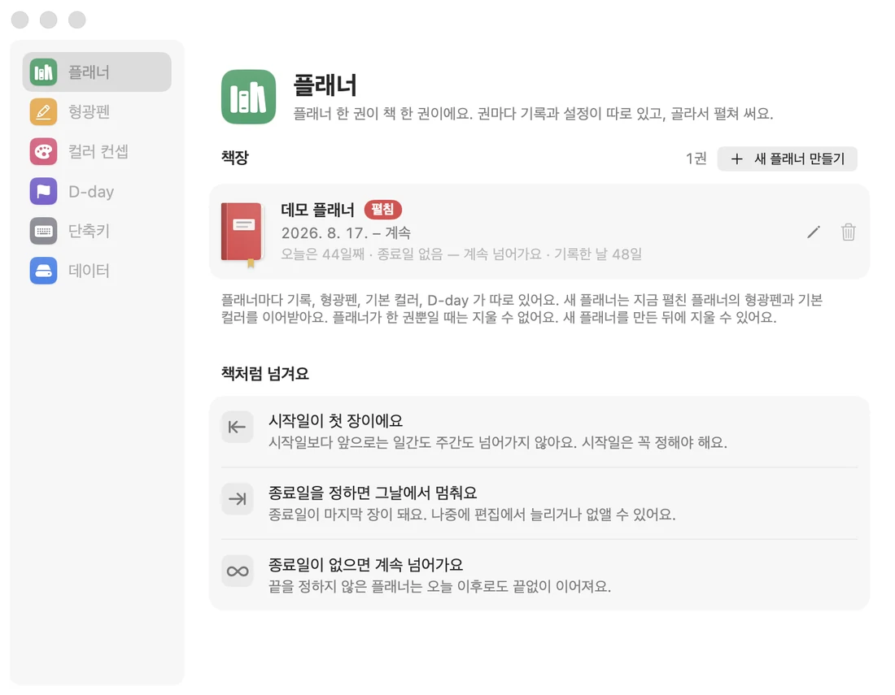
일간은 A4 가로 한 장에 이틀씩 — 가운데 선을 따라 자르면 손에 드는 종이 플래너 크기예요. A4 세로로 하루 한 장, 주간과 홈은 A4 가로. 기간을 정해 한 번에 뽑고, 벡터라 인쇄가 선명해요.
기록이 없는 날은 빈 양식 — 종이로도 쓸 수 있어요.
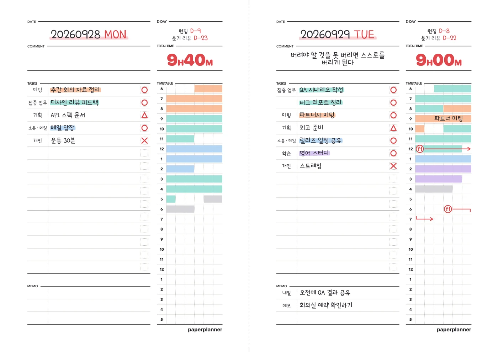
처음 열면 플래너 만들기부터 사용법까지 차근차근 안내해요.
런칭까지, 시험까지 — 저장해 둔 D-day 중 그날 필요한 것만 두 개까지 골라 붙여요.
← → 넘기기, T 오늘, W · D · H 보기, 1–7 형광펜, E 지우개.
날마다 다른 강조색. 기본 컬러는 설정에서.
또박또박 볼펜 느낌의 Poor Story 로 적혀요.
Mac · Windows 앱은 새 버전이 나오면 알려 주고, 누르면 알아서 바꿔 끼워요.
iPad · iPhone
iPad 는 어제와 오늘이 나란히 펼쳐진 책상이에요. Apple Pencil 로 쓰고, 손바닥이 화면에 닿아도 괜찮아요. 폰에서는 ‘쓰기’ · ‘시간’ 을 누르면 그 칸으로 카메라처럼 다가가서, 크게 쓰고 칠해요.
미리 보기 출시를 준비 중인 앱의 실제 화면이에요.

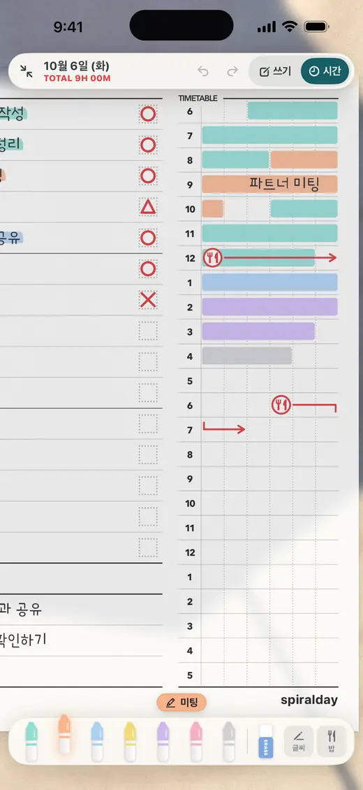

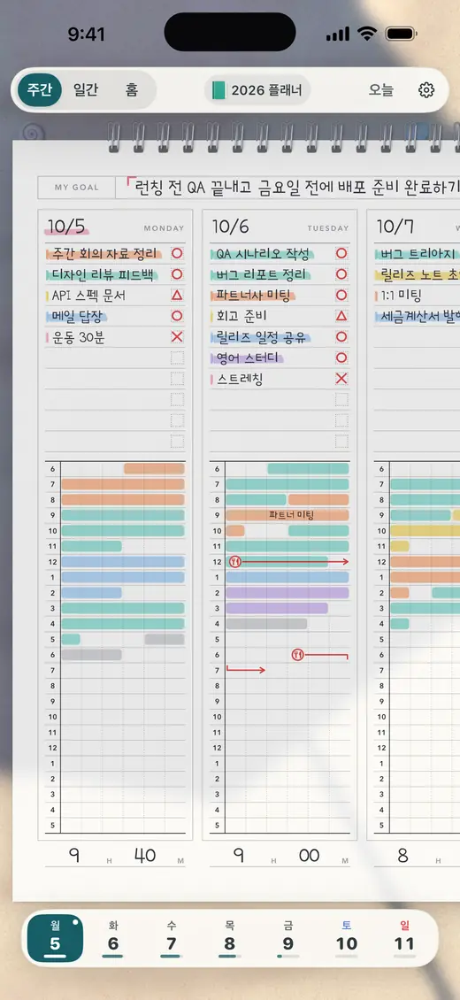
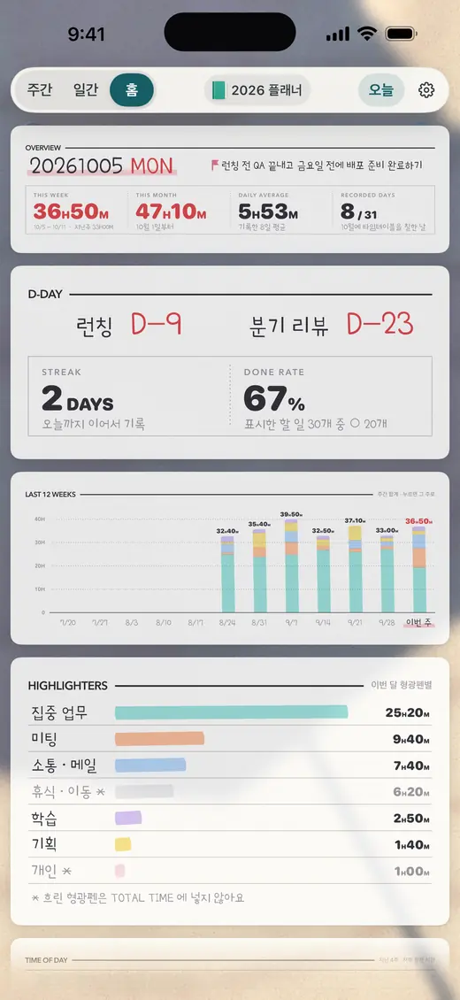
앱을 열지 않아도 오늘 칠한 시간과 D-day, 타임테이블, 할 일이 홈 화면에 보여요. iPhone · iPad 는 오늘 한 장을 통째로 띄우는 큰 위젯과 잠금 화면 위젯도 있고, Android 는 2×2 · 4×2 두 가지 크기로 놓을 수 있어요.

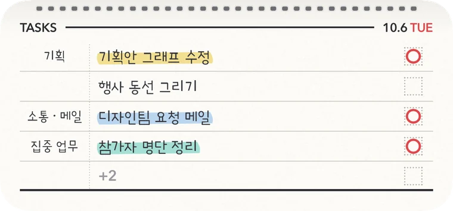
Desk
바닷가의 파라솔 그늘, 블라인드 사이로 드는 교실 햇살. 종이는 그대로 두고 그 밑의 책상과 빛만 바뀌어요. 해 질 무렵이면 스탠드나 랜턴 같은 저녁 조명으로 천천히 넘어가고, 도구 막대도 그 빛을 따라가요.
미리 보기 iPhone · iPad 앱의 설정 › 이 기기 › 책상에서 골라요.
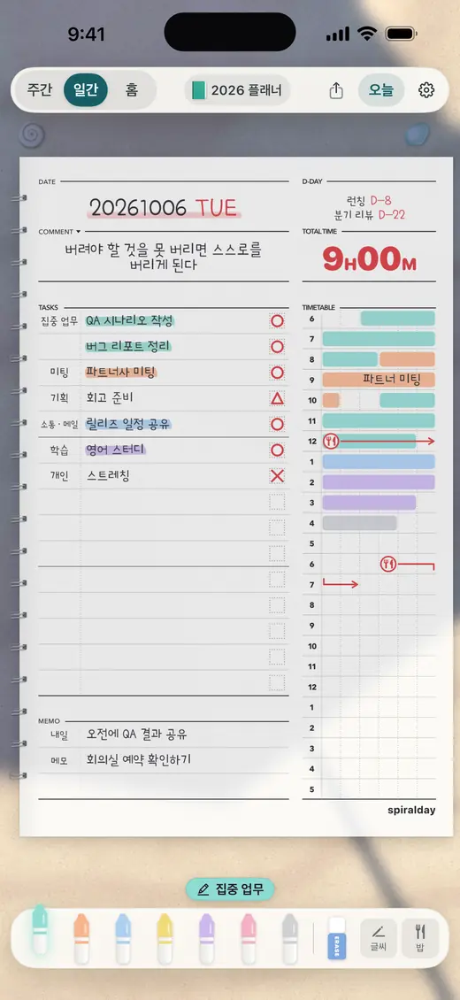
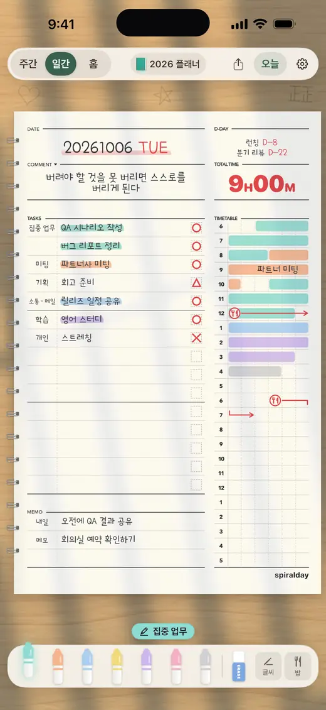
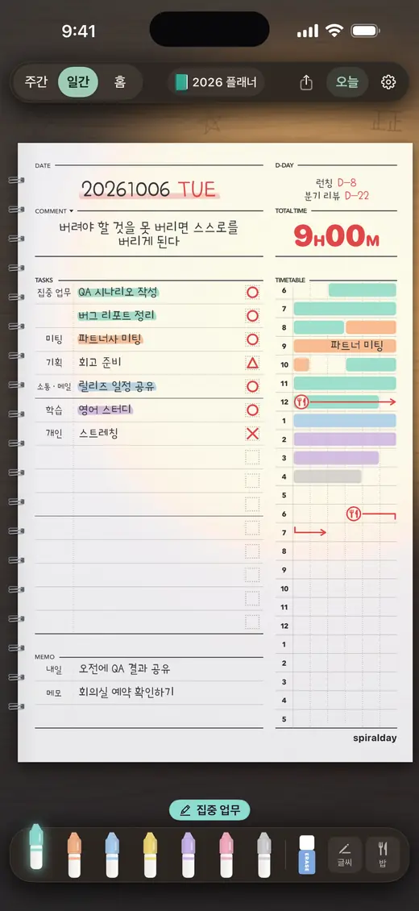
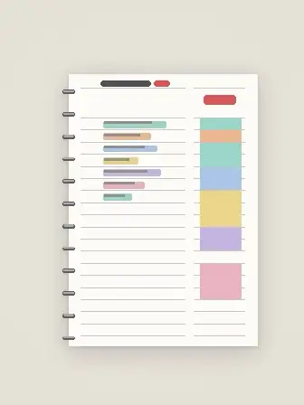
기본따뜻한 회색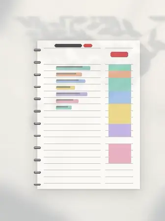
흰 책상잎 그림자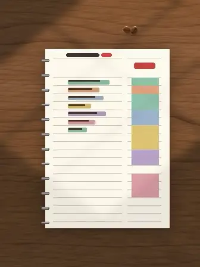
카페 테이블창가 햇살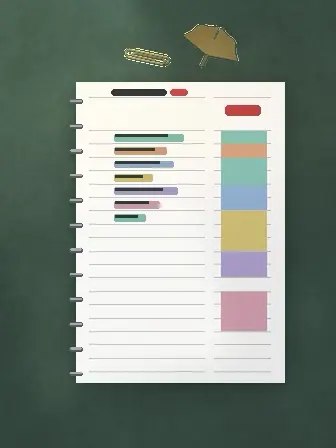
도서관높은 창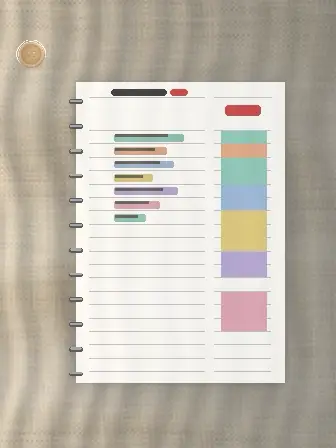
리넨커튼 너머 낮빛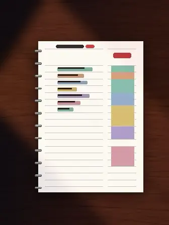
밤 책상해 질 녘 노을책상은 기기마다 따로 골라요. 같은 플래너라도 iPad 는 바닷가, iPhone 은 학교 책상에 둘 수 있어요. 어두운 모드에서는 늘 저녁 빛이에요.
Spiralday Sync
지금 쓸 수 있어요 켜고 싶은 사람만 켜는 동기화예요. 지금은 Mac · Windows 끼리 맞춰요.
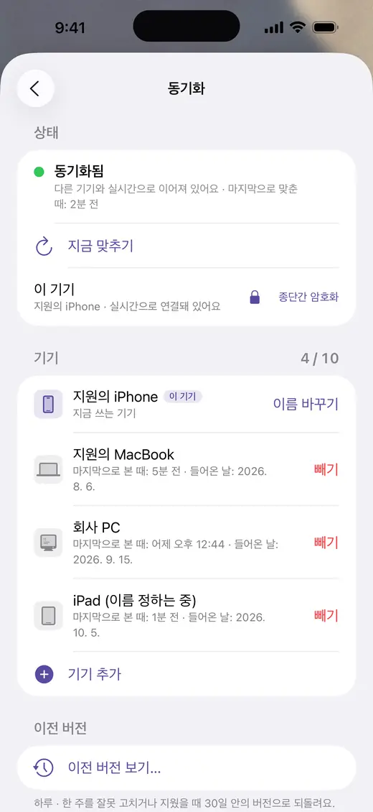
Install
App Store 에 나오면 받기만 하면 돼요. 나오는 날 Threads (새 창) 에서 바로 알려 드릴게요.
App Store 에서 Spiralday 를 받으면 끝이에요.
Google Play 에 나오면 받기만 하면 돼요. 나오는 날 Threads (새 창) 에서 바로 알려 드릴게요.
Google Play 에서 Spiralday 를 받으면 끝이에요.
Privacy
Spiralday 에는 계정도, 광고도 없어요. 쓰는 즉시 내 기기에 파일로 저장돼요.
~/Library/Application Support/Spiralday ,%APPDATA%\Spiralday Contact
이런 기능이 있으면 좋겠다, 여기가 이상하다 — Threads DM 이나 메일로 보내 주세요. 하나하나 다 읽고 있어요. 출시 소식도 Threads 에서 가장 먼저 알려 드려요.
무료 · Mac (macOS 14 이상) · Windows 10 · 11 (베타)
iPhone · iPad · Android 는 곧 나와요